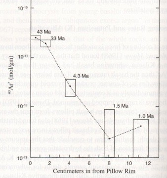
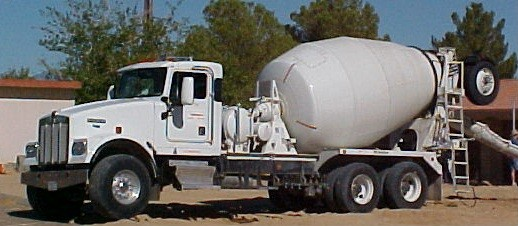

Rock Formations
All rocks are the same age. Why do we keep talking about the different "ages of rocks"? If you have accurately dated one rock, why date another?
The one thing that evolutionists and creationists agree upon is that all rocks are the same age. Neither group claims that minerals have been popping into existence out of nothing from time to time. All the atoms in the rocks have been in existence since "the beginning."
1
The only argument is whether or not the beginning of heavy elements happened when a star exploded billions of years ago, or when they were spoken into existence thousands of years ago.
Despite this, creation scientists and evolutionary scientists both talk about "young rocks" and "old rocks" This can be very confusing. For example, Robert wrote:
|
On an unrelated note, one of the articles on your site stated that lava from Mt. St. Helens had been dated by scientists as being very old even though we know that the eruption happened recently and quickly, showing the unreliability of some dating methods. But wouldn't an evolutionist say that the date is not a problem because the lava or debris came from within the earth which is millions of years old? Maybe I am misunderstanding the article, but what is the answer to this?
|
Robert really wants to know, and he deserves an answer. This essay is written primarily for people like Robert. But we also get emails like this one from Bjoern:
|
Apparently you think that we can't know how the rock formed, and hence isochron dating is only speculation - there may be another process which gives these results. You are the first creationist I've ever heard using this argument - even the (so-called) creation scientists at the ICR and at AiG agree with mainstream geologists on how igneous rocks form!
|
Bjoern had to be trying very hard not to understand our point. He was trying to twist what we said so that he could disagree with it. We didn't say scientists don't know how igneous rocks form. We said scientists don't know for sure how the material that makes up the igneous rocks came into existence. Although it generally isn't worth our time to answer people like Bjoern, it is important to realize that there are other people, like Robert, who might be confused by arguments made by people like Bjoern.
Rocks and Rock Formations
The confusion comes from the fact that the age of a rock formation isn't the same as the age of the rock that makes up that formation. Unfortunately we (and just about everyone else) tend to be imprecise and use the term "age of the rock" when we really mean "age of the rock formation."
Certainly the magma that came out of Mount St. Helens in the 1980's existed since the beginning. But the ash layers and the small lava domes it produced were formed on different dates. What scientists seek to do is to determine the date upon which a rock took its current form as an ash layer or lava dome. They want to do this because they know that things under them are older than the formation, and things above them are younger than the formation. This allows them to date things between the layers.
Sedimentary Rock
In general, sedimentary rocks (we should say, "sedimentary rock formations," but that's so awkward) can't be dated. Sedimentary rocks are formed from bits of rock that have been broken off other rocks by wind or water erosion, and deposited in their current position by wind or water. Since they are made up of pieces of "old rock", one can't analyze the chemical content of the rocks to determine the age of the formation.
If a sedimentary rock formation happens to contain a 1956 Chevy, then you know that the rock formation was created by a flood or sandstorm that occurred in 1956 or later. But that only tells you the maximum possible age of the sedimentary layer. A flood that happened in 1940 could not create a sedimentary layer containing a 1956 Chevy. But just because the layer contains a 1956 Chevy doesn't mean the flood happened in 1956. A 2003 flood might have buried a 1956 Chevy that was in someone's back yard, so the rock formation has been around since 2003.
If the sedimentary rock contains fossils, and you know the age of the fossil, then you might think you could determine the age of the rock. For example, if the rock contains the fossil of a Dodo bird, you might think the rock formation had to be formed prior to 1681 because Dodo birds went extinct in 1681. That is, we think Dodo birds went extinct then because nobody has seen one since. But maybe there is a flock of them still living in a remote part of the world, and someday, someone might capture a live one. Scientists thought the Coelacanth was extinct, until fishermen started catching them. So, the first problem you have with dating sedimentary rocks using fossils is the uncertainty of the age of the fossil. You don't know for sure when (or even if) they went extinct.
The second problem with dating sedimentary rocks is that sedimentary rocks are made up of older rocks. Suppose a Dodo bird was caught in a flood and became part of a sedimentary rock layer in 1500. Then suppose that in 2000 another flood tore through that 1500 rock formation and made a new rock formation consisting of fragments of that older rock formation. You would have a 2000 rock formation containing a Dodo bird fossil. (Yes, I know birds don't fossilize very well. It would have been better to use a sea shell as an example, but there aren't any famous sea shells that have gone extinct recently. The point is simply that old fossils can turn up in new sedimentary layers because new sedimentary layers are made up of pieces of older rock formations.)
If you are going to date a sedimentary rock formation by a fossil, you need some way of knowing when the critter lived, and you need some way of knowing that the fossil wasn't already fossilized when the rock layer was formed. These are things you can't know. Therefore, you can't reliably date a sedimentary rock layer by the fossils it contains.
If someone claims to know the age of a fossil by knowing the age of the sedimentary rock formation containing the fossils, one has to ask, "How do you know the age of the sedimentary rock formation?" If the answer is, "By the age of the fossils in it," that is a logical fallacy called "circular logic."
If someone claims to know the age of a fossil by knowing when it evolved, and when it went extinct, then one has to ask, "How do you know when the fossil evolved, and when it went extinct?" If the answer is, "By the age of the sedimentary rock formation containing those fossils," then one has to ask, "How do you know the age of the sedimentary rock formation?" If the answer is, "By the age of the fossils in it," that's circular logic again, with just one more step around the circle.
This was a rather long explanation of why geology textbooks will tell you that sedimentary rock formations can't be dated by dating the things inside the rock layer. Sedimentary rock formations are made up of pieces of older rock formations. You may get different ages depending upon which piece you try to date.
Volcanic Rocks
Scientists do try to date volcanic (igneous) rocks. (Oops! They try to date volcanic rock formations.) Remember, the scientists don't care about the age of the rock--they care about the date the rock took its present form. That is, scientists aren't trying to determine how old the lava or ash is. They are trying to determine when the lava or ash came out of the volcano and formed a layer. One common way to do this is to use potassium-argon dating. But dating lava using potassium-argon is like trying to date a glass of ginger ale.
Dating Ginger Ale
Suppose you are investigating a murder. The victim was apparently drinking a glass of ginger ale when murdered. There is still some ginger ale left in his glass. If you can determine how long the ginger ale has been in the glass, you can determine the time of the murder.
When you first pour a glass of ginger ale, it has lots of carbonation bubbles in it. But, as the glass sits there, the carbonation escapes, and the ginger ale goes flat. So, if a scientist studied ginger ale carefully, he could determine how long it takes for half the bubbles to escape, and could develop an equation that would tell how long a glass of ginger ale had been sitting on a table.
Notice that the equation won't tell you how old the ginger ale is. By that we mean, it doesn't tell you when the drink was manufactured and bottled. It tells you how long ago the bottle was opened. That's because something happens when the bottle is opened. The carbonation starts escaping when the bottle is opened. The longer the bottle has been open, the less carbonation there will be (until it is all gone).
Potassium-argon dating is based on a similar principle. Lava contains potassium (a solid) and argon (a gas). When the volcano erupts, almost all of the argon gas escapes. Then the lava hardens. An unstable (that is radioactive) isotope of potassium very slowly decays into argon gas, which is trapped in the solid rock. Lava is like a glass of ginger ale in reverse. It starts out flat, and accumulates more gas bubbles as time goes by. The more bubbles, the longer the lava has been out of the volcano.
The problem with potassium-argon data is the "excess argon" problem. Lava, fresh out of a volcano, already has some argon bubbles in it. There isn't a lot of argon, but there is enough to make recent lava flows appear to be millions of years old.
|

|
Consider this diagram , which was published in Science in 1968. The article it came from 2 talks about the "excess argon" found in a very recent underwater lava flow. Since the lava flow was so recent, there should not be any argon in it because the potassium hasn't had time to decay. But, to the researchers' dismay, it contained "excess argon". That is, it contained argon that they didn't expect to be there.
The diagram shows that the concentration of argon about 2 inches (5 centimeters) deep into a sample of lava was about 10-12 moles/gram. Since you probably don't deal with moles per gram on a daily basis, you might be wondering, "Just how much is 10-12 mol/gm?" Well, 1 mole of argon 40 is 40 grams. So the amount of excess argon is 40x10-12 grams of argon per gram lava.
Since that probably didn't clear things up very much, let's try to visualize 40x10-12 grams argon per gram lava.
|
|
This cement truck holds 10 cubic yards of sand. That's about 2 million teaspoons. Multiply 2 million teaspoons by 40x10-12. The result is 80 millionths of a teaspoon (0.000080 teaspoon). I've never actually counted the number of grains of sand in a teaspoon, but I'm guessing that there are 10,000 grains of sand (or less) per teaspoon. If that is so, then one grain of sand is at least 0.0001 teaspoon.
|

|
Suppose you put one grain of black sand in a cement truck filled with white sand. That one grain of black sand would represent a little more than the typical amount of "excess argon" in modern lava flows. Furthermore, that one grain of sand is roughly equivalent to the amount of argon that would be produced by decay of potassium in 1.5 million years.
If all lava contained 40x10-12 grams of argon per gram of lava when the lava cooled, then one could simply subtract that amount of "excess argon" from the amount of argon measured to determine how long it had been since the lava cooled. But, as the graph shows, the amount of measured argon depends upon how deeply you dig into the sample.
Imagine that our hypothetical murder victim had been drinking his ginger ale outside his Nebraska home in January, when the wind chill index was 40 degrees below zero. The ginger ale would freeze in his glass very quickly. There would probably be more bubbles near the top of the glass than near the bottom because the top freezes first and traps the bubbles. If you tried to determine how long the ginger ale had been in the glass before it froze, your answer would depend upon where in the glass you took the sample.
Lava cools on the outside first. The diagram published in Science shows that the argon, attempting to escape from the molten lava, tends to get trapped near the outside edge where the lava has already hardened. So, the amount of argon you measure depends upon how deeply you dig into the rock to take the sample. Near the edge of this particular sample, the argon trapped when the lava cooled was equivalent to the amount of argon that would have been generated by 43 million years of potassium decay.
So, even though you can measure how much argon is in the lava now, you simply don't know how much argon was in the lava when it cooled. Therefore, you can't tell how much has been produced by decay of potassium since the lava cooled. Since we are working with such small numbers (remember, one grain of sand in a cement truck represents 1.5 million years), a small amount of initial argon can introduce significant errors, especially when the method is used to date volcanic deposits above and below hominid remains that are supposed to be 2 million to 6 million years old.
Rubidium-Strontium Isochron Dating
Potassium-argon dating is based on the flawed assumption that all the argon escapes before lava cools. Isochron dating is based on an even poorer assumption.

|
The graph at the left is a typical example taken from a real geology textbook. 3 It shows the relative amounts of two elements called rubidium 87 (87Ru) and strontium 87 (87Sr) found in rock samples. Both are normalized by dividing by the same number, which happens to be the amount of strontium 86. The graph shows a positive correlation between rubidium 87 and strontium 87. In other words, rocks that have more rubidium 87 in them have more strontium 87 in them.
Now, the question is, "How do we determine a date from this graph?" Remember that we aren't trying to determine the age of the rock. We are trying to determine the age of the rock formation. That is, we aren't trying to determine how old the lava is, we are trying to determine how long it has been since the lava came out of the volcano.
|
With the potassium-argon method, the lava changes fundamentally when it comes out of the volcano. Almost all the argon escapes because it is gas, and it has the opportunity to escape. But there is nothing about a volcanic eruption that should change the amount of rubidium or strontium in a rock. So there is no reason to believe that the amounts of rubidium and strontium have anything to do with how long it has been since an eruption.
We discussed the rubidium-strontium dating of Mount Magnetic extensively in the August 2000 newsletter, so we won't repeat what we said then. The point we want to make now, which we failed to make then, is that there must be something that starts the clock running when rock formation takes its present form. The isochron method doesn't have it.
Carbon 14
Finally, here is a brief word about carbon 14. If anyone ever tries to tell you that carbon 14 has been used to prove that rocks are millions of years old, he is terribly misinformed. Carbon 14 decays so rapidly that it is all gone in 30,000 to 50,000 years. There would not be any carbon 14 in a rock millions of years old, so it could not be used to date it.
Furthermore, carbon 14 doesn't tell you how old something is. It tells you how long it has been dead. Therefore, it only works on things that were formerly alive, like wood and bone. Since most rocks were never alive, it doesn't make any sense to try to figure out when they died.
Coal is the only kind of rock that was ever alive. But since evolutionists believe that coal was formed about 363 million years ago, they never try to use carbon 14 to date it.
No real scientist has ever claimed that carbon 14 has proved rocks to be millions of years old.
Dating Rock Formations
Evolutionists like to gloss over the assumptions they have to make when dating rock formations. But the assumptions aren't valid, and the results they get are inconsistent. They like to blame bad results on "contamination", or experimental error. If they like the results, then they have confidence in the answer. That isn't good science.
Footnotes:
1
In this essay we will always use the term "the beginning" to represent the time at which the atoms composing the rock came into existence, by whatever process (either star explosion or divine decree), at whatever time that happened.
2
Dalrymple & Moore, Science, 161, 1968 "Argon 40: excess in submarine pillow basalts from Kilaueau Volcano, Hawaii", pages 1132-1135, https://www.science.org/doi/10.1126/science.161.3846.1132
(Ev)
3
Anthony R. Philpotts, Principles of Igneous and Metamorphic Petrology, 1988, Prentice Hall, page 428
(Ev)